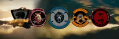

175th Milsim Attack Group

Pages
Who We Are
Page 1 - TOC
Page 2 - Checklists Pt 1
Page 3 - Checklists Pt 2
Page 4 - HARM Codes
Page 5 - Ordnance / HAFU
Page 6 - Case I-III Departure
Page 7 - Case I-III Recovery
Page 8 - Case I Recovery
Page 9 - Case III Recovery
Page 10 - Case III Recovery
Page 11 - Case III Recovery
Page 12 - LSO Grades
Page 13 - Quick Start
Page 14 - Overhead Break
Page 15 - Case I - III Recovery (VFA22)
TALD Mach 0.8
TALD Mach 0.9
TALD Mach 1.0
TALD Mach 1.1
JSOW MAch 0.8
JSOW MAch 0.9
JSOW MAch 1.0
JSOW MAch 1.1
RWR Symbology
RWR Symbology
RWR Symbology
175th Mag - Lingo - Page 1
175th Mag - Lingo - Page 2
175th Mag - Radio - Page 1
175th Mag - Radio - Page 2
175th Mag - Radio - Page 3
175th Mag - Radio - Page 4